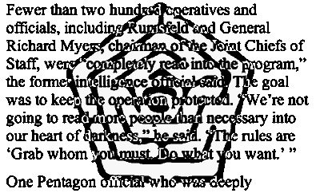
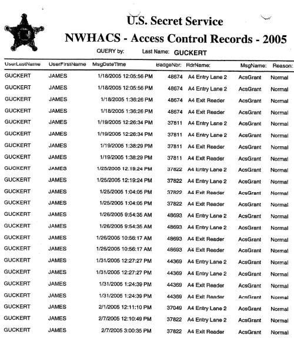
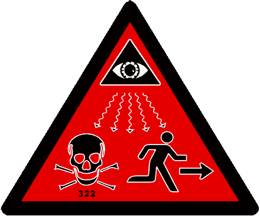

1. Path of Enlil (Northern Stars/Constellations) 1) ĸ. APIN -- Triangulum (at least) 2) ĸ. Ã… ú-gi, Å¡Ä“bu (senex) -- Perseus (a) (kà kkabu nÃÂbÅ« Å¡a ĸ. Ã… úgi -- α or β Persei) (b) (kakkabÄÂni ummulÅ«tum Å¡a Ã… ugi (the dim stars of Perseus -- group of small stars in East Perseus) (c) (ĸ. Nasrapu - most probably ε Persei, (or group composed of μ, λ etc.) 3) ĸ. GÃÂM, Gamlu (ritual vessel, "weapon of Marduk") -- Auriga 4) ĸ. MaÅ¡-tab-ba gal-gal, Tu'ÄÂme rabÅ«ti -- most of Gemini, or simply α and β Geminorum 5) ĸ. MaÅ¡-tab-ba tur-tur, Tu'ÄÂmÄ“ sihrÅ«ti -- λ and ζ (?) Geminorum 6) ĸ. AL-LUL Ã… ittu (?) -- Cancer, exclusive of β which belongs to ĸ. Siru, the serpent constellation 7) ĸ. Ur-gu-la (the great dog) -- NÄ“Å¡u (lion) -- Leo (a) (kakkabÄ“ Å¡a kakkad ĸ. Ur-gu-la -- (the two stars of the lion's head) -- ε and μ Leonis) (b) (kakkabu IV Å¡a irti-Å¡u -- the 4th star of his breast -- γ Leonis) (c) (ĸ. Lugal (ĸ. Å¡arru) -- king -- Regulus) (d) (kakkabu II Å¡a rapaÅ¡ti-Å¡u -- the 2nd star of his hips -- δ Leonis) (e) (kakkabu edu Å¡a zibbati-Å¡u -- the single star of his tail -- β Leonis) 8) ĸ. A-EDIN, Eru -- Virgo West (Coma Berenices ?) 9) ĸ. HEN-GAL-A-A, Hegalai, nuhÅ¡u -- abundance -- Coma Berenices 10.(a)) ĸ. Ã… U-PA, kakkabu namru -- the shining star - Arcturus (α Boötes), at times probably the entire southern part of Boötes 10.(b)) ĸ. Ã… udun -- yoke -- also Arcturus (a) (ĸ. Ã… udun-anÅ¡u -- the (forward) yoke of the ass -- η Bootis (+ neighbouring stars) (b) (ĸ. Ã… udun-anÅ¡u arkitu -- the rear yoke of the ass - ε Bootis (very probably also ξ, À and ζ Bootis) 11 (a)) ĸ. BAL-UR-A kakkab baltum -- Corona Borealis 11 (b)) (also) ĸ. GAM-tu -- kippatu -- Corona Borealis 12) ĸ. Mar-gid-da, sumbu -- wain -- Ursa Major (a) (ĸ. LUL-A, ĸ. Ka-a, ĸ. Ã… elibu, -- fox star -- Ä¡ (Alkor) above ζ Ursae Majoris) (b) ĸ. γ, kakkabu Å¡a ina pani (put) Margidda izzazu -- the star which stands before η (?) Ursae Majoris 13) ĸ. MU-GID-SAR-DA, niru Å¡a Å¡amÄ“ -- yoke of heaven -- Draco 14) ĸ. Mar-gid-da-an-na - wain of heaven - Ursa Minor 15) ĸ. AN-DU-BA-MEÃ… (an-gub-ba-meÅ¡) šú-ut E-kur -- Serpens 16) ĸ. AN-KU-A-MEÃ… (an-dur-a-meÅ¡) šú-ut E-kur -- Ophiuchus - Southern portion of Ophiuchus is named ĸ. il Za-mà -mà 17) ĸ. Ur-ku (Lik-ku ?) -- kalbu -- dog -- Hercules (a) (MAÃ… -a-ti (ĸ. Aha-a-ti) -- star of the side -- (γ +) β Herculis) (b) (ĸ. Ur-ka-a-ti -- ζ Herculis) (c) (kakkabu edu -- the single star -- μ Herculis) 18) ĸ. Uza -- she-goat -- Lyra (also ĸ. GaÅ¡an-din, ĸ. BÄ“lit balÄÂti) (a) (kakkabu nibÅ« Å¡a ĸ. Uza -- α Lyrae (b) (the two stars behind him (sukal il Ba-u, i.e., α Lyrae) -- probably η and θ Lyrae) 19) ĸ. UD-KA-GAB-A (Ud-da-dÃ…Â-a) -- Panther -- Cygnus + Pegasus + α Andromedae (a) (Kumaru Å¡a ĸ. Ud-ka-dÃ…Â-a -- δ Cygni) (b) (Kakkabu nibÅ« Å¡a irti-Å¡u -- α Cygni) (c) (Kinsu Å¡a ĸ. Ud-ka-dÃ…Â-a -- η Pegasi) (d) (Asidu Å¡a Ud-ka-dÃ…Â-a -- α Andromedae) 20) ĸ. Ã… AH (Å¡ahu) il Da-mu -- very probably Delphinus 21) ĸ. SisÅ« -- horse -- very probably Equuleus 22) ĸ. Lulim -- at least Andromeda 2. Path of Anu (Middle of "Equatorial" Stars/Constellations) 1) ĸ. Ã… im-mah (Ã… inunutum -- kakkab imbari) -- the swallow and storm constellation -- West Aquarius (α, β, Ç, ε and ν) 2) ĸ. DIL-GAN, ĸ. Iku -- constellation which in various periods had different extent - four forms to be distinguished: 1) Aries (= Hired Labourer) + Cetus + East Aquarius, 2) Aries (= Hired Labourer) + Cetus - East Aquarius - GU-LA, 3) Cetus + East Aquarius - Aries KU-MAL, 4) Cetus - Aries KU-MAL / East Aquarius GU-LA 3) ĸ. AnÅ«nitÅ«, ĸ. nÄÂr Dillat (Tigris constellation), ĸ. Tultum (worm constellation) the SW portion of Pisces plus the "band" É-ζ Piscium 4) ĸ. avÄ“l KU-MAL -- Agru, the hired labourer - Aries 5) ĸ. MUL-MUL, ĸ. Sappa -- Pleiades + ζ or ο Persei 6) giÅ¡ ĸ. Li-e -- tablet (of fate), ĸ. Gú-an-na, tiara of Anu -- Aldebaran plus Hyades 7) ĸ. Sib-zi-an-na -- faithful shepherd of heaven - Orion 8) ĸ. MaÅ¡-tab-ba Å¡a ina mihrit ĸ. Sibzianna -- the twins who stand opposite Orion -- γ and ξ Geminorum 9) ĸ. Dar-lugal -- canis minor or Procyon (α) alone 10) ĸ. Kak-si-di, kakkab miÅ¡rÄ“ -- bow star -- Sirius plus a star in Southern Canis Major (ε or η) 11) ĸ. Ban, ĸ. KaÅ¡tu -- Bow-star -- ε, δ, Ä Canis Majoris plus Ç, l, Puppis 12) ĸ. MuÅ¡, ĸ. Siru -- snake -- Hydra + β Cancri 13) ĸ. U-NAG-GA hu, BÃÂD-GA, Ú-ga, Aribu -- raven -- Corvus - and part of Crater 14) ĸ. AB-SIM -- East Virgo (also Spica (α Virginis) alone) 15) ĸ. Zi-ba-an-na, ZibÄÂnitu, scale: karÄÂn ĸ. Akrabi -- horn (claw) of the scorpion -- Libra 16) ĸ il Za-mà -mà -- Southern portion of AN-KU-A-MEÃ… -- Ophiuchus 17) ĸ. ID hu, ĸ. NaÅ¡ru -- eagle -- Aquila 18) ĸ. avel BAD (mitu, pagru) death-constellation -- very probably Antinoos 3. Path of Ea (Southern Stars/Constellations) 1) ĸ. HA (ĸ. NÅ«nu) ĸ. HA (NÅ«nu) il E-a -- fish, fish of Ea -- Piscis Austrinus, more exactly its Southern portion plus Formalhaut 2 (a)) ĸ. NUN ĸı (Eridu) il E-a -- Eridu, city of Ea -- Vela plus Southern Puppis 2 (b)) (with this (see 2a above) are wholly or partially identified (α) ĸ. MU-GID-a-ab-ba -- ĸ. Ã… udun a-ab-ba -- yoke of the ocean (of Ea)) (β) ĸ. BIR, il Ni-ru il E-a, yoke of Ea 3) ĸ. Nin-mah -- Very probably Carina East 4) ĸ. En-te-na -- maÅ¡-Å¡ig, -- Centaurus exclusive of NE section (cf. UR-BE) 5) ĸ.giÅ¡ GAN-UR (GUÃ… UR), maÅ¡kakatu, -- Crux 6) il PA and il Lugal -- the two stars behind MaÅ¡kakatu - β and α Centauri 7) ĸ. NU-MUÃ… -DA -- NamaÅ¡Å¡u -- group of stars between -- β Sagittarii - α Phoenicis (ref. Indus + Grus) Â


The administration
.--< vicinity and its accidental detection by Spacewatch was a very unlikely event, and thus one estimates that P8 is very small. Attention is now turned to Pn, the probability that I99I VG was a natural body. There are two factors which argue against such an identification. The first is the light variations mentioned earlier; the balance of evidence (e.g., see the image presented in ref. I9, which is distinctly similar to rotating artificial satellite trails frequently seen in wide-field photographs) supports the idea that I99I VG is an artificial object. Second, the pre-encounter orbit of I99I VG was so similar to that of the Earth that it was unstable under close approaches to our planet on a time-scale measured in millennia at most. This is obvious from the above discussion of the frequency of close approaches. The dynamics there fore would require I99I VG to have recently arrived in that orbit (perhaps as ejecta from a lunar impact?), which is unlikely, if it is an asteroid. The Spacewatch team have suggestedl3, 26 that there is a population of small aster oids concentrated near the terrestrial orbit, but in general these have either eccentricity or inclination much larger than zero, and semi-major axes differ ing from unity, so that they are dissimilar from I99I VG; this is obvious from the fact, as stated above, that the inclusion of I99I VG in an estimation of the mean terrestrial impact probability quadruples the value obtained using all other asteroids (i.e., including this hypothesized near-Earth belt). One thus must esti mate that Pn is small. Since both P8 and Pn are small, one is forced to conclude, in the absence of new information, that Pais not zero and indeed seems to be substantial, mean ing that I99I VG is a candidate for consideration as having an alien genesis. Are there other data that contradict this (i.e., information that forces one to estimate a small value for Pa)? There are no accepted identifications of alien artifacts, but if the I 99 I VG episode were characteristic of terrestrial visitations then would these have been spotted in the past? Spacewatch is the first such surveillance programme to patrol deep space, so the absence of similar episodes is not surprising. Ground-based military surveillance of near-Earth space relies upon optical sensors for ranges over IO ooo km, the radar detectibility limit being "'IO m at that rangezs,z9; data from such programmes do not contradict the alien probe interpretation, especially since the flux of small asteroids is much higher and objects found to be in non-geocentric orbits are soon discarded. The final point to be discussed, on the basis of the alien artifact interpreta tion, is whether I99I VG was under control, or making a random passage by the Earth (i.e., an inert artificial object). If the latter then one can estimate the popu lation from the probability of discovery of "'o ·ooo OI per annum, and the Spacewatch team having discovered one such object in five years of operation. Thus one would estimate "'20 ooo as being the population in similar orbits (contra the Fermi Paradox), and thus about one per decade to hit the Earth or one per century to fall onto the populated regions of the globe. Observations (or the lack of them) do not preclude this possibility. On the other hand, contin ued searching with Spacewatch, and, one hopes, within a few years with the more powerful Spaceguard system3o, would turn up other examples of such a substantial population. The non-detection of such a population would indicate that I99I VG is unlikely to have been an inert alien probe. Conversely, only about one in 50 objects passing randomly within o · 022 AU have perigee heights as low as o·oo3I AU, as was observed in the case of I99I VG, leading to the possibility that it was a singular alien spaceprobe on a controlled reconnaissance mission. This interpretation would not be limited by the probabilistic analysis © The Observatory • Provided by the NASA Astrophysics Data System Ul 00 r-- 1995 April Duncan Steel [/] .Q 0 Ul 0"1 0"1 ..--< given above, since the probe could have been directed to make repeated close passages. The above has been intended to provide prima facie evidence that I99I VG is a candidate alien artifact. The alternative explanations -that it was a peculiar asteroid, or a man-made body-are both estimated to be unlikely, but require further investigation. In connection with the former, it will be of interest to see whether sky-surveillance programmes reveal asteroids with similar orbital and light-curve properties as 1991 VG. For the latter, each of the handful of rocket bodies which mankind has left in heliocentric orbits in the plausible launch windows requires detailed investigation: are their initial heliocentric orbits known, was fuel left on board any of them, are their physical parameters such that non-gravitational forces could plausibly bring them back to the Earth within a few decades, could they fit the observed spectral reflectivity of I99I VG? My personal bias is that 1991 VG was indeed an artificial object, but an anthro pogenic one. The point is that such an interpretation, which will likely be favoured by most, requires: (z) the action of non-gravitational forces which are not known to have occurred; (iz) the chance return of one of a very small number of man-made objects left on heliocentric orbits in acceptable epochs; (iii) that return to have been unusually close, given its geocentric distance at discovery; and (iv) the object to have been spotted despite long odds against such discov ery. If 1991 VG is a returned man-made rocket body, it was very much a fluke that it was observed, and the normal process of science then requires that we consider the possibility of some other origin for it. References (1) P. A. L. Chapman-Rietschi, The Observatory, 114, 174, 1994. (2) A. V. Arkhipov, The Observatory, 113, 306, 1993. (3) R. A. Freitas, Jr., JBIS, 36, 501, 1983. (4) R. A. Freitas, Jr., Spaceflight, 26, 438, 1984. (5) M. D. Papagiannis, QJRAS, 19, 277, 1978. (6) D. G. Stephenson, QJRAS, 20, 422, 1979. (7) M. J. Carlotto & M. C Stein, JBIS, 43, 209, 1990. (8) R. A. Freitas, Jr., JBIS, 36, 490, 1983. (9) R. A. Freitas, Jr., Icarus, 55, 337, 1983. (ro) E. J. Betinis, JBIS, 31, 217, 1978. (II) F. J. Tipler, QJRAS, 21, 267, 1980. (12) F. J. Tipler, QJRAS, 22, 279, 1981. (13) D. L. Rabinowitz et al., Nature, 363, 704, 1993. (14) !AU Circ. 5387. (15) !AU Circ. 5388. (16) !AU Circ. 5401. (17) Minor Planet Circ. 20823. (18) !AU Circ.5402. (19) The Messenger (ESO), no. 66, 66, 1991. (20) S. J. Ostro, personal communication. (21) Minor Planet Circ. 20745. (22) D. G. King-Hele et al., The RAE Table of Earth Satellites,3rd Edn. (Macmillan, London), 1987. (23) Satellite Situation Report, NASA-Goddard Space Flight Center, 33, no. 4, 1993. (24) D. I. Steel, MNRAS, in press. (25) C. F. Chyba, Nature, 363, 701, 1993. (26) D. L. Rabinowitz, Icarus, 111, 364, 1994. (27) J. V. Scotti, personal communication. (28) N. L. Johnson & D. S. McKnight, Artificial Space Debris, (Orbit Book Co., Malabar, Florida), 1987. (29) S. H. Knowles, Orbital Debris: Technical Issues and Future Directions, NASA CP-10077, 1992, p. 235· (30) D. Morrison (ed.), The Spaceguard Survey: Report of the NASA Near-Earth-Object Detection Workshop (Jet P